1
Click My Details → on My Workforce
My Workforce is the punch screen (app.bpmsquare.com/wfm/me).

Request leave or overtime from your own page, and review leave, overtime and punch corrections as a supervisor. Each step shows the exact button to click. Approve and Reject are described but never clicked.
Do this from your own My Details page. Your supervisor approves or rejects it.
My Workforce is the punch screen (app.bpmsquare.com/wfm/me).
The Leave balance line shows how many paid and unpaid days are left. Requests you made earlier are listed under Leave.
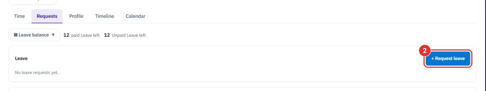
Type From and To, or click and drag on the calendar. The calendar marks Holiday, Already on leave and Week off.
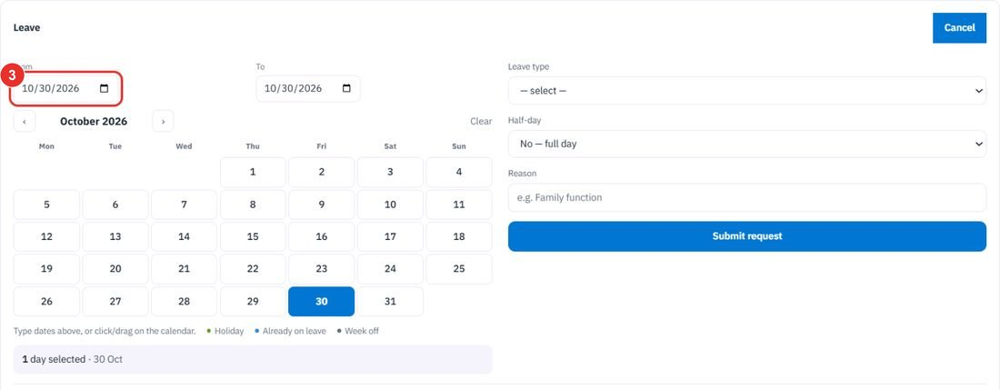
The list shows how many days are left, for example paid Leave (12 left) and Unpaid Leave (12 left).
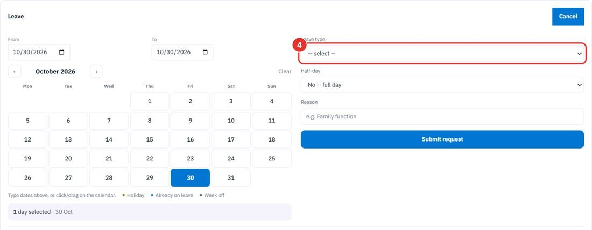
No — full day or Yes — half day.
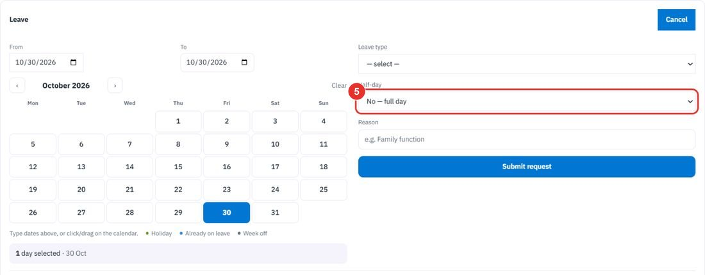
A short reason, for example Family function.
The request goes to your supervisor. Cancel at the top of the card closes the form.
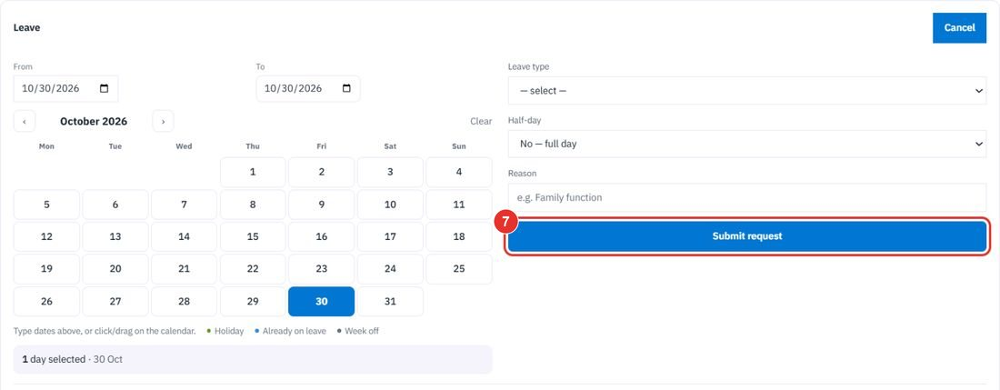
Do this before the day. Your supervisor must approve it before you can punch work-from-home on those dates.
It is under Overtime / Work from home on the Requests tab of My Details.
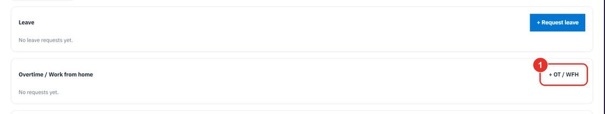
Work from home or Overtime (advance notice). Then set From, To and a Reason.
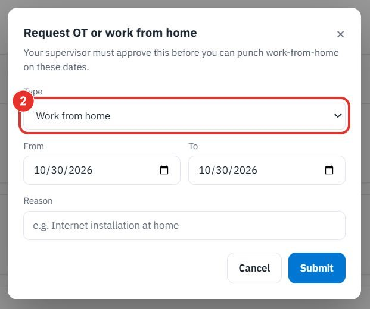
Submit sends the request. Cancel closes the window.
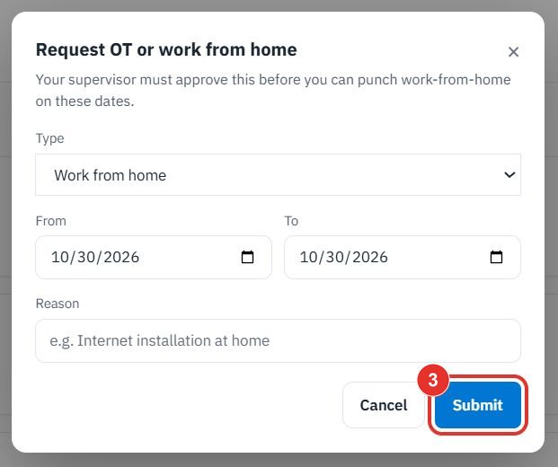
On the punch screen, the Other… list under the four buttons holds OT in.
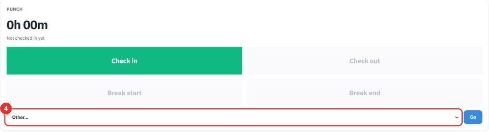
Do this as a supervisor. Open app.bpmsquare.com/wfm/leave (Leave & Holidays). Leave types are set in Settings → Workforce.
Leave requests lists what employees asked for, with Employee, Type, From, To, Reason and Status. A waiting request has Approve and Reject buttons on its row. The demo workspace has none waiting.
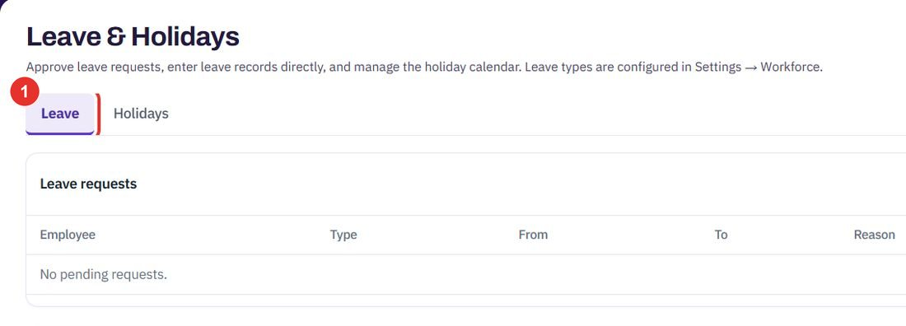
Pending shows only requests waiting for you. All also shows the ones already decided.
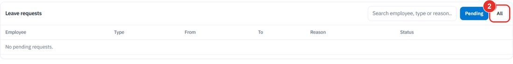
Type an employee, a leave type or part of a reason.
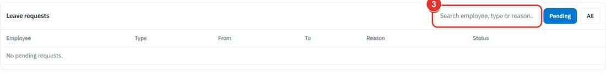
Scroll to Add a leave record directly. Choose the Employee, Leave type, From, To, Half-day and add Remarks.
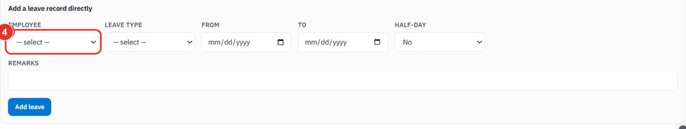
Add leave writes the record. This guide does not click it.
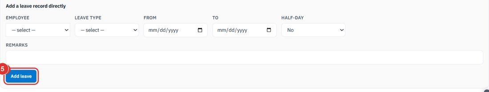
It holds the holiday calendar: days nobody is marked late or absent, shown on every employee's leave calendar. You can upload a whole year at once or add one holiday.
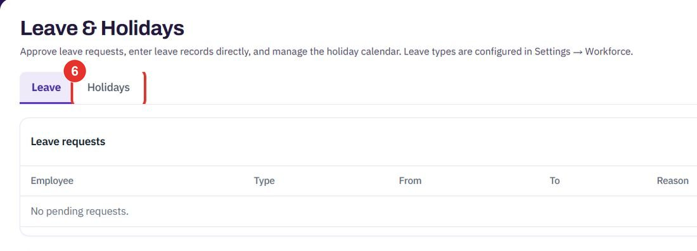
Do this as a supervisor. Open app.bpmsquare.com/wfm/corrections. Approving a correction writes a new event and supersedes the original; nothing is edited in place.
The table shows Employee, Date, From, To, Duration and Status. Waiting sessions have Approve and Reject buttons. The demo workspace has none, so it reads No overtime awaiting approval.
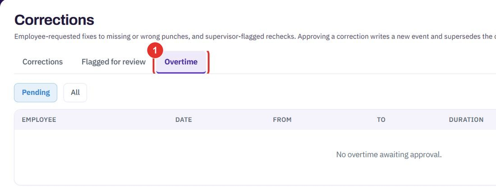
Pending is selected first. All also lists sessions already decided.
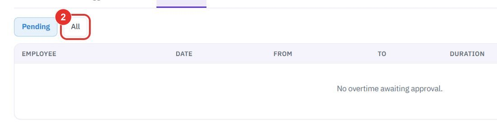
Use the search box or the All issue types list. Requests wait here with Approve and Reject buttons.
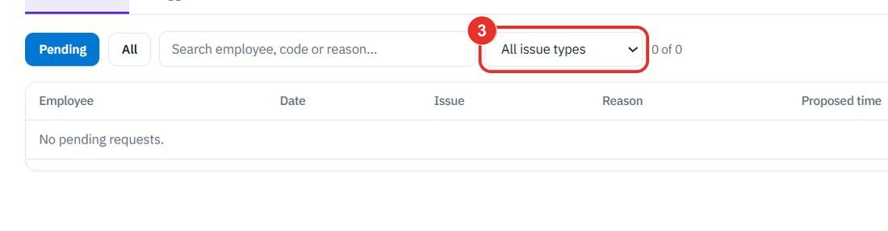
Supervisor-flagged rechecks are listed here.
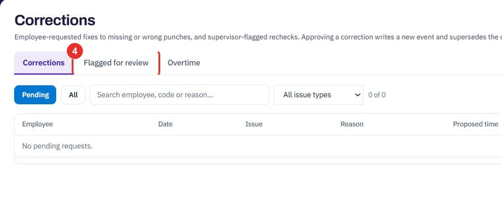
Twenty minutes on a live workspace, with your files and your team.